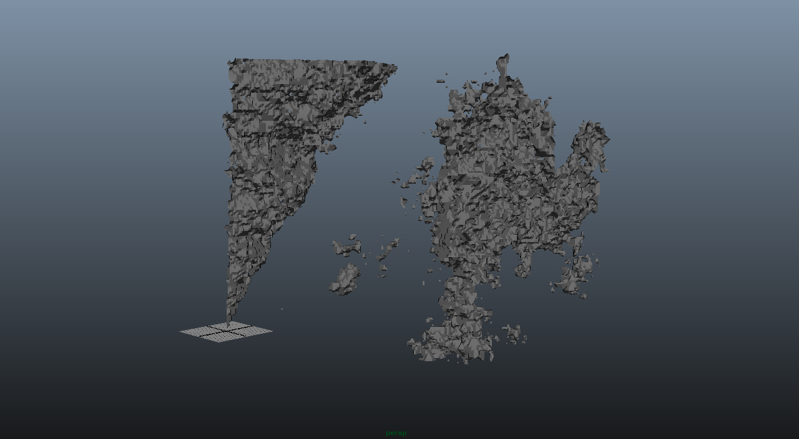
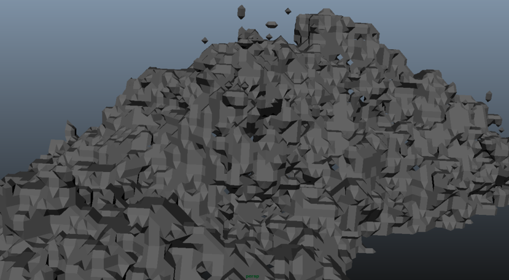

Screenshots



During my first semester of my Masters program at USC I was enrolled in a graphics development course where we learned the typical rendering pipeline for rasterizing triangles. Our final project was to find any white paper and implement it. Myself and a couple of fellow students found a paper describing the Marching-Cubes algorithm.
We started by generating three-dimensional Perlin noise. This provided us with a 3D point-cloud of varying values. We filtered the values by an arbitrary value of 0.5, and discarded the lower values. The remaining points were run through our Marching-Cubes algorithm. We checked each cell in the cloud to see if it had neighboring cells that were occupied. If a cell had neighbors on all sides we would skip it. If it had some empty spots surrounding it we would mark it as a surface. We did a final pass over the data and generated triangles based on whether or not they were surfaces points. There were 256 possible permutations of the final geometry for a cell, but we were able to narrow it down to 8 with different rotations.
Once the geometry was generated we would export it as an OBJ file so we could examine it in Maya. We also took the geometry and compiled it into a series of triangle lists that we could render in OpenGL. I added controls for the Xbox 360 controller so the user could fly through the final mesh generated from the 3D Perlin noise.
The application was developed using only C++ and OpenGL.